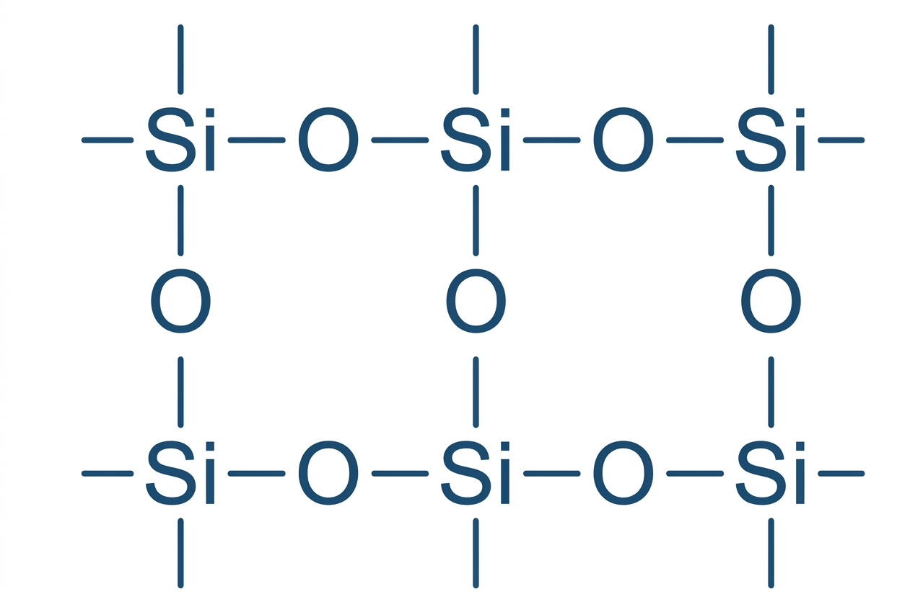
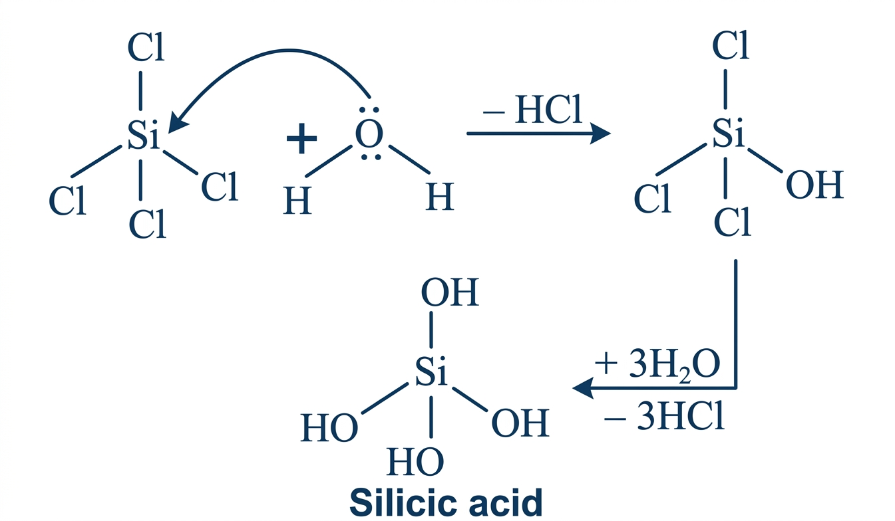
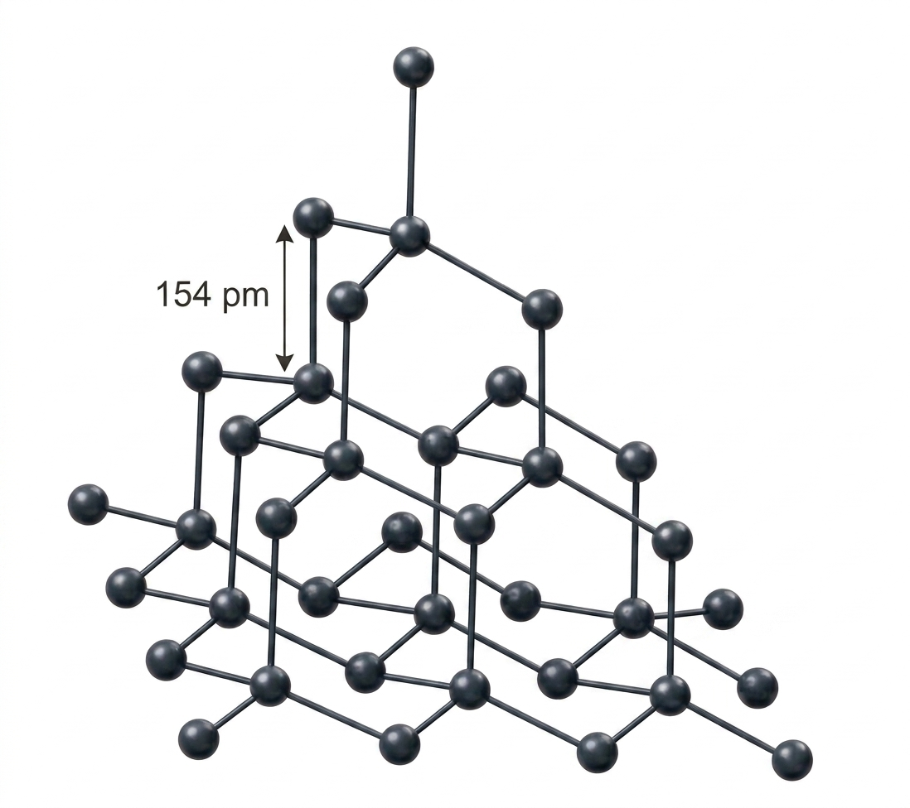
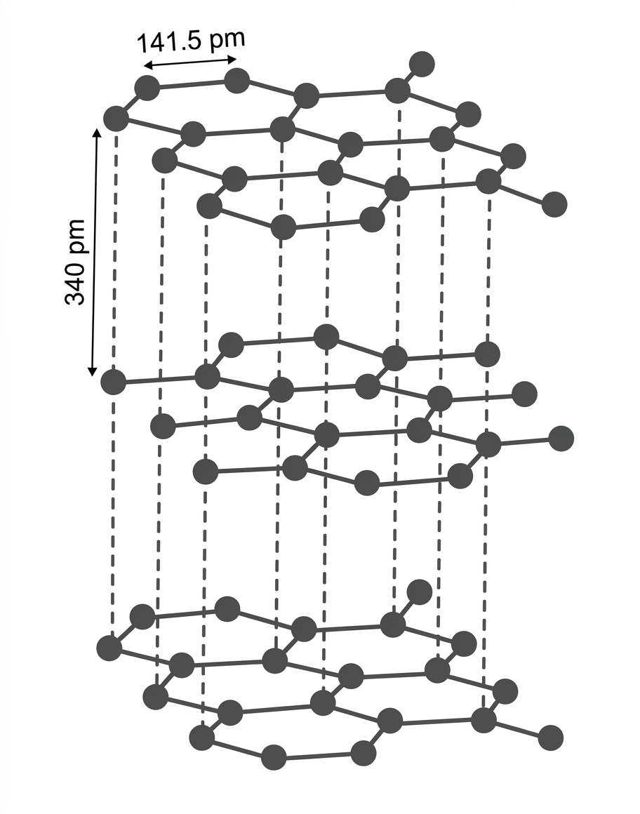
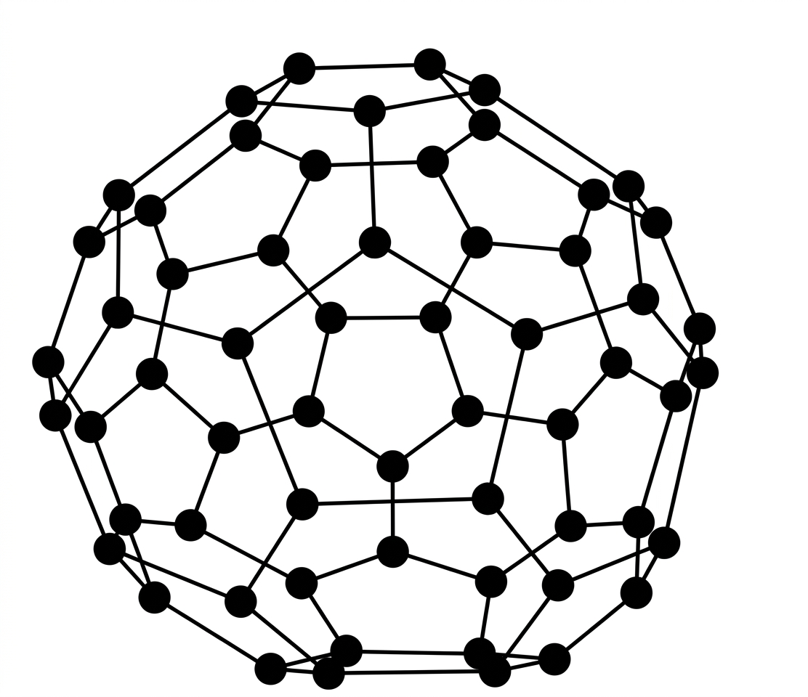

(i) Reactivity towards oxygen:
All members of Group 14 react with oxygen on heating to form oxides. They mainly form two types of oxides: monoxide (MO) and dioxide (MO₂). Silicon monoxide (SiO) exists only at high temperatures.
Oxides in higher oxidation states are generally more acidic than those in lower oxidation states.
Among dioxides (MO₂), CO₂, SiO₂, and GeO₂ are acidic, whereas SnO₂ and PbO₂ are amphoteric in nature.
Among monoxides (MO), CO is neutral, GeO is acidic, whereas SnO and PbO are amphoteric.
Carbon monoxide (CO) forms a number of coordination compounds with transition metals, such as [Ni(CO)₄] and [Fe(CO)₅].
Carbon dioxide (CO₂) is a linear molecule and exists as a gas at ordinary temperature. Solid CO₂ is known as dry ice (Drikold).
Silicon dioxide (SiO₂) is a solid with a three-dimensional network structure, where each silicon atom is tetrahedrally bonded to four oxygen atoms through covalent bonds.

The bond energy of the Si–O bond is 368 kJ/mol, which makes SiO₂ chemically inert and gives it a high melting point.
GeO₂, SnO₂, and PbO₂ are network solids, and PbO₂ acts as a strong oxidising agent.
2PbO₂ + 4HNO₃→ 2Pb(NO₃)₂ + 2H₂O + O₂
Carbon also forms a suboxide (C₃O₂) ,
O = C = C = C = O and lead forms mixed oxides such as Pb₃O₄, 2PbO .PbO₂
(ii) Reactivity towards water: Carbon, silicon, and germanium are not affected by water. Tin decomposes steam to form dioxide and dihydrogen gas.
Sn + 2H₂O −> SnO₂ + 2H₂
Lead is unaffected by water, probably because of a protective oxide film formation.
(iii) Reactivity towards halogen: These elements can form halides of formula MX
2, and MX
4, (where X = F, Cl, Br, I).
Except carbon, all other members react directly with halogen under suitable condition to make halides. Most of the MX
4 are covalent in nature.
The central atom undergoes sp
3 hybridization and the molecule is tetrahedral in shape. Exceptions are SnF
4 and PbF
4, which are ionic in nature.
PbI
4 does not exist because the Pb-I bond initially formed during the reaction does not release enough energy to unpair 6s
2 electrons
and excite one of them to a higher orbital to have four unpaired electrons around the lead atom.
Heavier members Ge to Pb are able to make halides of formula MX
2. Stability of dihalides increases down the group.
Considering thermal and chemical stability, GeX
4 is more stable than GeX
2, whereas PbX
2 is more stable than PbX
4.
Except CCl
4, other tetrachlorides are easily hydrolyzed by water because the central atom can accommodate the lone pair of
electrons from the oxygen atom of a water molecule in its d orbital. Hydrolysis can be understood by taking the example of SiCl
4.
It undergoes hydrolysis by initially accepting a lone pair of electrons from a water molecule in the d orbitals of Si, finally leading to the formation of Si(OH)
4 as follows

ANOMALOUS BEHAVIOUR OF CARBON:
Carbon differs from rest of the members of its group. It is due to its smaller size, higher electronegativity, higher ionisation enthalpy and unavailability of d orbitals.
In carbon, only s and p orbitals are available for bonding and, therefore, it can accommodate only four pairs of electrons around it.
This would limit the maximum covalence to four whereas other members can expand their covalence due to the presence of d orbitals.
Carbon also has unique ability to form pπ- ρπ multiple bonds with itself and with other atoms of small size and high electronegativity.
Few examples of multiple bonding are: C=C, C = C, c = 0 C = S, and C = N. Heavier elements do not form pπ- pr bonds because their atomic
orbitals are too large and diffuse to have effective overlapping.
ALLOTROPES OF CARBON:
Carbon exhibits many allotropic forms; both crystalline as well as amorphous. Diamond and graphite are two well-known crystalline forms of carbon.
In 1985, third form of carbon known as fullerenes was discovered by H.W.Kroto, E. Smalley and R.F.Curl.
For this discovery they were awarded the Nobel Prize in 1996.
Diamond:
It has a crystalline lattice. In diamond each carbon atom undergoes sp³ hybridisation and linked to four other carbon atoms by using hybridised orbitals in tetrahedral fashion.
The C-C bond length is 154 pm. The structure extends in space and produces a rigid three dimensional network of carbon atoms.
In this structure directional covalent bonds are present throughout the lattice. It is very difficult to break extended covalent bonding and,
therefore, diamond is the hardest element on the earth. It is used as an abrasive for sharpening hard tools,
in making dyes and in the manufacture of tungsten filaments for electric light bulbs.

Graphite:
Graphite has layered structure. Layers are held by van der Waals forces and distance between two layers is 340 pm.
Each layer is composed of planar hexagonal rings of carbon atoms. C-C bond length within the layer is 141.5 pm.
Each carbon atom in hexagonal ring undergoes sp² hybridisation and makes three sigma bonds with three neighbouring carbon atoms.
Fourth electron forms a t bond. The electrons are delocalised over the whole sheet. Electrons are mobile and, therefore,
graphite conducts electricity along the sheet. Graphite cleaves easily between the layers and, therefore, it is very soft and slippery.
For this reason graphite is used as a dry lubricant in machines running at high temperature, where oil cannot be used as a lubricant.

Fullerenes:
Fullerenes are made by the heating of graphite in an electric arc in the presence of inert gases such as helium or argon.
The sooty material formed by condensation of vapourised Cn small molecules consists of mainly C60 with smaller quantity of C70 and
traces of fullerenes consisting of even number of carbon atoms up to 350 or above. Fullerenes are the only pure form of carbon
because they have smooth structure without having 'dangling' bonds. Fullerenes are cage like molecules.
C60 molecule has a shape like soccer ball and called Buckminsterfullerene.
It contains twenty six-membered rings and twelve five membered
rings. A six membered ring is fused with six or five membered rings but a five membered ring can only fuse with six membered rings.
All the carbon atoms are equal and they undergo sp² hybridisation. Each carbon atom forms three sigma bonds with other three carbon atoms.
The remaining electron at each carbon is delocalised in molecular orbitals, which in turn give aromatic character to molecule.
This ball shaped molecule has 60 vertices and each one is occupied by one carbon atom and it also contains both single and double bonds
with C-C distances of 143.5 pm and 138.3 pm respectively. Spherical fullerenes are also called bucky balls in short.

It is very important to know that graphite is thermodynamically most stable allotrope of carbon and, therefore, A,Hº of graphite is taken as zero. AH values of diamond and fullerene, C60 are 1.90 and 38.1 kJ mol 1, respectively.
Other forms of elemental carbon like carbon black, coke, and charcoal are all impure forms of graphite or fullerenes.
Carbon black is obtained by burning hydrocarbons in a limited supply of air. Charcoal and coke are obtained by
heating wood or coal respectively at high temperatures in the absence of air.